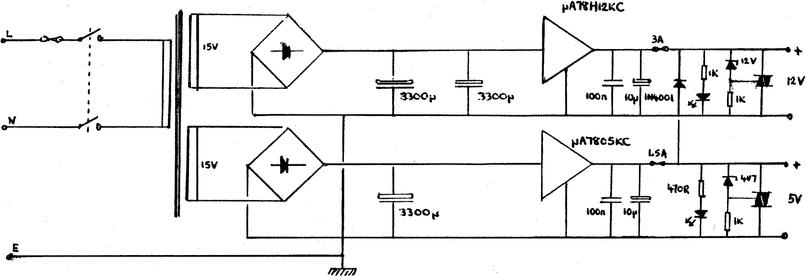

80-Bus News |
March–April 1984 · Volume 3 · Issue 2 |
| Page 10 of 51 |
|---|
80x24 video and FDC on one card seemed like good news. Naturally, I bought the FDC-only kit version and it went together without any major snags (it needed a ”scope to set up, which I was able to borrow from work).
Next, I needed a PSU to power the drives. “No problem” I said, looking at the GM804K in Gemini’s catalogue. “Don’t do ’em any more” a smiling Dave Hunt informed me when I walked into Henry’s to buy one. Well, I didn’t want to buy the Gemini switch-mode job just to power a couple of disk drives, so I decided to design my own. The result is below. I hesitiate to say “professionally designed”, since I don’t exactly earn my pennies doing hardware design. Anyway, the spec. is as follows:
12 volts at 3 amps
5 volts at 1.5 amps
both outputs have short-circuit protection, are fused, and are crowbar protected.
The design is fairly standard, and can be built for under #30, including the crowbar protection.

Disk Drive PSU
+12v @ 3A
+5v @ 1½ A
With a Crowbar!
Many of you are probably wondering what the hell “Crowbar protection” is. Well, it isn’t a way of protecting your prized computer against hoardes of plastic-box owners hell-bent on terrible revenge for all the nasty things we say about them… no, it’s not that sort of crowbar. It is instead a neat little circuit you stick on the output of your power supply, and it ensures that should your 5v regulator in your computer PSU fail, and put unregulated voltage, or worse, mains, onto the 5v rail, your computer is safe. It works as follows: (see figure below).
Let us assume that all is well, and the PSU is outputting 5v. The voltage across the zener diode is 4.7v. This means that the voltage at point A is 0.3 volts. This isn’t enough to trigger the triac, so nothing happens. Now let us assume that a fault has occurred, and the output voltage begins to rise. Because the voltage across the zener is constant at 4.7 volts, the voltage at point A will begin to rise. As soon as it reaches 0.7 volts, the triac turns
| Page 10 of 51 |
|---|